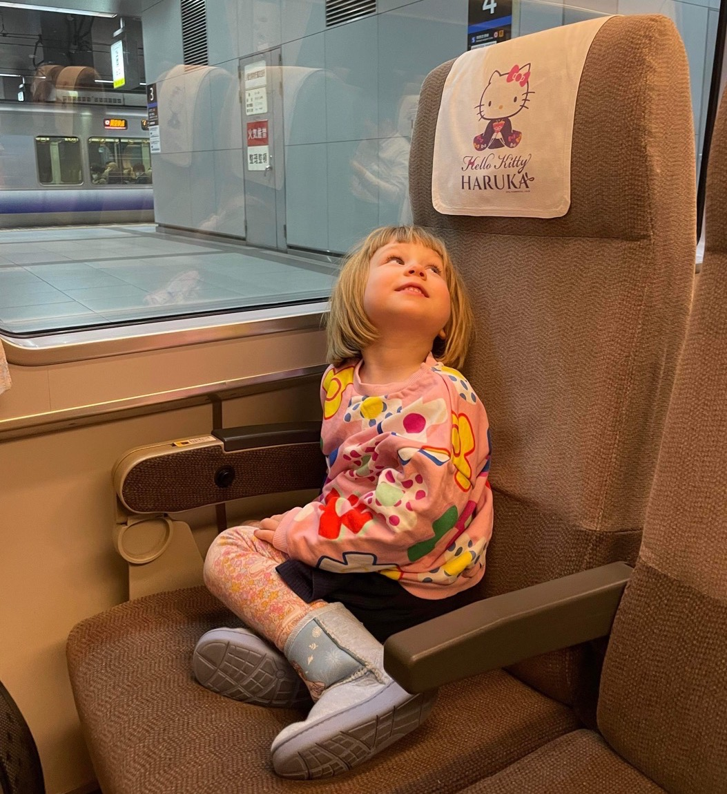
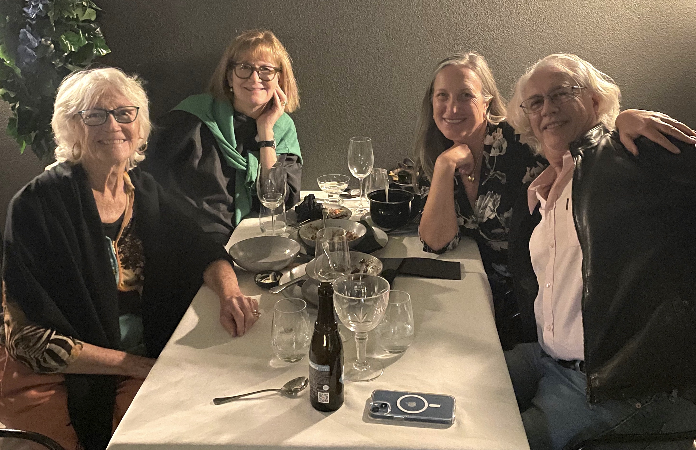

The Fargo Chronicle
Twenty-third Edition
December 2022
Free
Double trouble
Congratulations to Ella who has been awarded the degrees of Bachelor of Creative Industries with Distinction and Bachelor Business - Marketing.
Now that university is done, Ella decided not renew her office role with Australian Girls Choir and focus on finding a role more suited to her career goals. She will continue to work with the choir as a Venue Manager for the Indooroopilly campus and at various events.
True blue Barry
Early in the year the decision was taken to replace her car, Mun's old Honda Jazz. The cost of required servicing and repairs far exceeded its market value. And thus Ella found Barry. Barry is a new VW Polo: so named in deference to his colour - Barrier Reef Blue.
Ella is looking for new house mates in the nearby suburb of Red Hill. Previous housemates have also completed university study and are moving away from Brisbane.
Family stuff
Floods once again ravaged Brisbane and surrounds in February.
We managed to zoom up to Magnetic Island in March for our friend Michael's 65th birthday.
It was significant birthdays all around this year with Cairns friends Rob and Joss celebrating 60 years, so we slipped up to Cairns to join in and also to explore the tablelands, and enjoyed some bush walks with Michael and Deborah.
New adventures
This year Julie, with support from Jason, has focused on Mun: sorting out medical and aged care assistance. Mun is still living independently at her unit in Curumbin.
In October Julie and friend Deborah took on the challenge of the Three Capes Walk on Tasmania's east coast. The rugged walk, carrying all their gear in backpacks, was over three nights camping in purpose built huts along the way.
It has become an annual event to catch up with school mates and this year they gathered on Magnetic Island off Townsville to celebrate their enduring friendships.
Leaning into retirement
Thankfully international travel resumed this year so Paul and friends Michael and Christopher managed a return trip to Europe to cycle in some glorious terrain in northern Italy and to catch up with relatives and friends.
This meant of course an opportunity to visit Max, Béa and Ida in France. Over two weeks Paul was able to join Maxwell's band, Dewaere, for two concerts and enjoy a side trip to San Sebastian in Pays Basque, Spain, principally to explore the local food.
Paul's band has been quiet again this year however Paul has been busy with the Men's Shed ukulele group. They have played a number of charity gigs and have several bookings over the festive season.
Paul continues cycling with regular early morning training rides and racing most weekends.
Making some noise
Maxwell and Béa have almost completed renovations on their new home in Saint-Brieuc. The terraced style home is located near the heart of the city and comproses three levels plus an attic and a basement.
Ida attends school a short walk nearby and turned four in December.
Spectacular

It has been another busy year for Maxwell with the release of a second album for Dewaere 'What is Pop Music Anyway' and an EP with Le SuperHomard. They've also released a Christmas single "Xmas and the three wise men", featuring Gaspard Royant, Maxwell, and Le SuperHomard. Plus, Max has released a solo Christmas album with support from his friend Yann. It is highly recommended as perfect listening for the holiday season and beyond.
In recognition of his output as a professional musician, Maxwell has acheived the status of "un intermittent du spectacle" which affords him a regular income over the full year.
Recording has started on an eagerly anticipated second album with Le SuperHomard and Maxwell is writing and composing a third album for Dewaere.
Hello Kitty
Kate, Ben and Luna set off in December to Japan for 10 weeks to explore the culture and to catch up on snow boarding. While waiting for Japan to open its borders, the family enjoyed a month on Minjerribah (North Stradbroke Island).
Kate's role teaching Japanese at West End State School has now been confirmed as a permanent position.
Luna attends day care at Milton and has devloped some great friendships there.
Mother's Day
Mun had a mastectomy last December and is now in the clear. She regularly plays cards with friends and still likes to visit the local RSL club near her beautiful unit in Currumbin.
Julie visits each week to accompany her to various appointments.